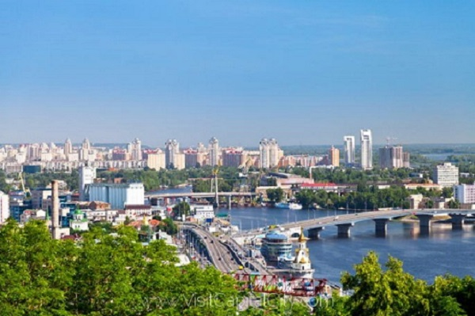

A person who has been forced to leave their country in order to escape war, persecution, or natural disaster.
It's hard because of the hate that they get and the little care that comes their way. They have no homes most of the time and don't know the language and are not familiar with the laws. Many americans treat those from out of the country harsh. Many of the americans put stereotypes on the refugees even when a group do something to america the whole race would be blamed. It's hard for them to get a job and the process for them to become citizens is long and most of the documents you need they don't have. Most refugees come to america with just their clothes on their bodies.
After the Russian Revolution, Ukraine declared its independence from Russia on Jan. 28, 1918, the current population stands at 45 million people. War in Donbass in a current war that is happening now and shows no sign of stopping anytime soon, Hutsul uprising is the only victory in the uprising against russia and was so big that it changed the direction that the war was going. During ww2 they only won one fight against the nazis but they lost the other 3 that followed, Great Northern War was a super big war that had 17 different armies fighting all at once and it ended in a Defeat, over all they are not that good at war considering how many times they lost. There economy right now is pretty bad and that has to do with the fact that they are in a war right now. 1.4 million people are now internally displaced inside Ukraine. A total of 1,369,644 migrants, or 1,072,964 families from donbas and crimea. 60 percent of the internal refugees are pensioners, 12 percent children, 4 percent are disabled. Displacement by the Abbasids. In 1667 a truce left western ukraine in Poland-Lithuania and eastern ukraine and Kyiv in Muscovy. In 1944 ukraine was the most dangerous place in the world because of the german soldiers in ukraine.